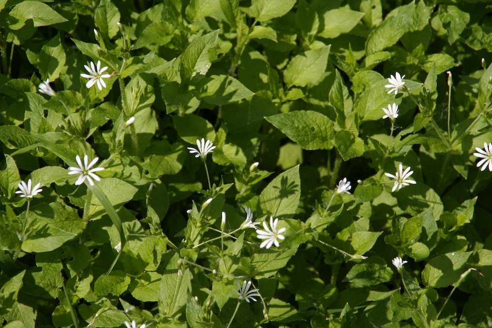

Weiße Wald-Sternchen am Bachufer — die größte Sternmiere Mitteleuropas.


Sternchen im feuchten Halbschatten
Die Hain-Sternmiere ist die größte und auffälligste der heimischen Sternmieren-Arten. Sie blüht von Mai bis Juli mit weißen, sternförmigen Blüten — jedes der fünf Blütenblätter ist so tief gespalten, dass es aussieht, als wären es zehn. Diese „Optical Illusion“ ist typisch für die Familie der Nelkengewächse: mehr Werbefläche für Bestäuber, weniger Pflanzen-Material.
Wo Bäche fließen
Während die Vogelmiere (S. media) auf gestörtem Boden und im Garten gedeiht und die Große Sternmiere (S. holostea) am Waldrand wächst, ist die Hain-Sternmiere ein klassischer Bachufer-Bewohner. Sie braucht ständig feuchten, humusreichen Boden im Halbschatten. Ein Pfad entlang eines Wald-Baches im Frühsommer offenbart oft große Bestände.
Wissenswertes & Merksätze
Erkennen leicht gemacht
Aufrechter, schwacher Stängel (30–60 cm), ohne die typische „behaarte Linie“ der Vogelmiere. Blätter gegenständig, eiförmig-zugespitzt, deutlich kurz gestielt (Unterschied zu S. media — fast sitzend). Blüten weiß (1–1,5 cm), fünf tief 2-spaltige Blütenblätter.
Unterscheidung von Vogelmiere
Vogelmiere (S. media): kleiner, oft niederliegend, behaarte Linie am Stängel. Hain-Sternmiere: größer, aufrecht, kurzgestielte Blätter. Plus: nemorum blüht im Wald, media überall.